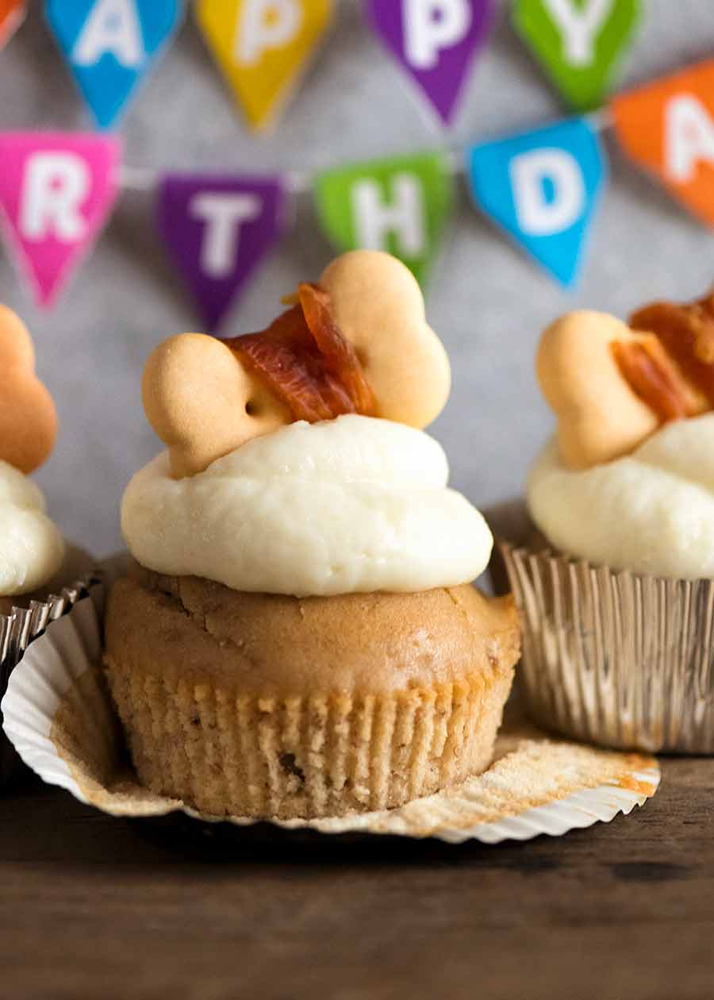

Welcome to Munchie's Cupcake Cafe!

This cafe specializes in treats for your furry friends
Our treats are safe for your faithful feline or your precious pup! We only use the best ingredients for your pets as we know how important their health and wellbeing is to you both.
Our cupcake flavors
Dogs
- Peanut butter (fan favorite!): Peanut butter and banana mixed with our famous base
- Chocolate: Don't worry, it's not actually chocolate!
- Vanilla: A simple blend that is easy on the tummy
Cats
- Tuna and shrimp (fan favorite!): A tuna base with a mini shrimp on top
- Catnip Infused: Vanilla infused with catnip
- 'Mouse': Chicken based cupcake with a frosting 'mouse' on top
Check out our new location!
With the help of our loyal customers, we were able to open a storefront downtown! Our location is dog (and adventurous kitten) friendly, and we will have free treats for your pets on the opening day - don't miss out!
123 Arlo Ave, Portland, OR 97266
Free cupcake Thursday
On Thursdays, bring your pet by for a free vanilla cupcake!
Try our recipes at home!